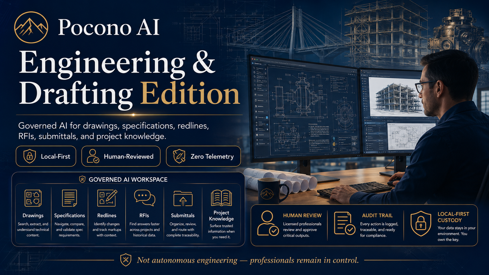

Sentinel Node — Drafting &
Engineering Edition
Governed AI for drawings, specifications, redlines, RFIs, submittals, and project knowledge.
Engineering and drafting teams manage thousands of project details across drawings, specifications, redlines, RFIs, submittals, meeting notes, standards, and closeout documents. Pocono AI helps organize, retrieve, summarize, and draft from those materials while keeping professional judgment, review, and responsibility with human experts.
The platform at a glance
Engineering & Drafting at a Glance
Sentinel Node — Drafting & Engineering Edition is built for technical teams that need faster document handling, better project memory, and governed AI support without surrendering professional control.

Tap or click to view full size · All outputs subject to qualified human review
Expand: Key points from the infographic
Redline summaries, revision comparison, RFI drafts, submittal packet summaries, specification lookup, drawing note search, meeting note action items, QA/QC checklists, closeout package organization, proposal and scope drafts, firm standards retrieval, lessons-learned capture.
Local-first custody, zero telemetry, human-reviewed outputs, source-grounded retrieval, provenance tracking, audit trails, professional control at every step.
Does not sign, seal, certify, or independently approve engineering work. Does not replace licensed professionals. Does not guarantee code compliance. Does not produce permit-ready documents without qualified professional review.
The problem
Where Engineering Time Gets Lost
Engineering and drafting offices lose time searching through project documents, comparing revisions, summarizing redlines, drafting RFIs, organizing submittals, and preserving project knowledge. Senior professionals often spend valuable time on documentation work that can be accelerated without surrendering professional control.
As projects grow more complex and deadlines tighten, the cost of slow document handling compounds: missed RFI deadlines, redundant research into previous project decisions, submittal delays, and institutional knowledge that walks out the door when a key team member leaves.
The Pocono AI approach
A Governed AI Layer Around Engineering Documentation
Pocono AI adds a governed AI layer around engineering documentation. It helps teams retrieve source material, summarize changes, draft internal responses, organize project records, and prepare review packets. Every output remains subject to human review.
Sentinel Node runs on-premises inside the engineering firm. Project files, drawings, specifications, and records stay local. Nothing leaves the building by default. The AI retrieves from your documents; it does not connect to external knowledge bases for your project data.
Project files stay on your hardware. Zero egress by default.
Every output reviewed by qualified professionals before use.
Retrieval from your documents, not from invention or guesswork.
Exportable, reviewable logs of what was retrieved and drafted.
Pilot workflow candidates
What Pocono AI Can Help With
Start with low-risk, high-value documentation workflows. These are the categories where Sentinel Node — Drafting & Engineering Edition adds the most leverage with the lowest risk to professional judgment.
- Redline summaries
- Revision comparison
- RFI draft assistance
- Submittal packet summaries
- Specification lookup
- Drawing note search
- Meeting note action items
- QA/QC checklist assistance
- Closeout package organization
- Proposal and scope drafts
- Firm standards retrieval
- Lessons-learned capture
- CAD/BIM-adjacent documentation
- Change-order support
- Discrepancy reports
- Standard operating procedures
- Project record custody
Professional boundaries
What It Does Not Do
These are hard stops — not pilot limitations. They will not change as the product matures.
- Autonomous design or engineering
- Structural calculations
- Code compliance guarantees
- Permit-ready drawing generation
- Sealed document automation
- Safety-critical design decisions
- Replacing licensed engineers, architects, or surveyors
- Signing, sealing, or certifying engineering work
Licensed professionals remain responsible for engineering judgment, calculations, code compliance, public safety, and any signed or sealed documents. Sentinel Node — Drafting & Engineering Edition is a documentation and workflow support system — not an engineering service.
Data custody
Why Local-First Matters for Engineering Firms
Engineering drawings, specifications, proposals, client records, and project files can contain sensitive business, safety, infrastructure, and proprietary information. Uploading those files to cloud AI services creates data custody risks that many clients, contracts, and regulatory frameworks prohibit.
Sentinel Node is designed for local-first custody, source-grounded retrieval, auditability, and human approval. Your project data is processed on hardware inside your facility. By default, nothing leaves your network.
No call home, no usage analytics sent to cloud services.
AI inference runs on Sentinel Node hardware, not vendor servers.
Reviewable, exportable record of what was retrieved and drafted.
Project files, specs, and drawings never leave your building by default.
Professional responsibility
Human Review and Responsible Charge
All engineering outputs must remain under qualified human review. Sentinel Node — Drafting & Engineering Edition produces draft content — not finished deliverables. Every output is a starting point for professional review, not a finished product.
Licensed professionals remain responsible for:
- Engineering judgment and calculations
- Code compliance verification
- Public safety determinations
- Any signed or sealed documents
- Review and approval of AI-assisted drafts before use
Where to start
Recommended Pilot Workflow Starting Points
If you are evaluating Pocono AI for your engineering or drafting operation, these are the best entry points: high value, low risk, clear human oversight.
Summarize markup changes across drawing sets for internal coordination or review meetings.
Draft RFI text from project documentation for professional review and issuance.
Extract and organize submittal information from documents for review preparation.
Retrieve relevant specifications, notes, or drawing references from project archives.
Assist with generating and organizing QA/QC documentation from project records.
Assist with assembling and summarizing project closeout packages from existing documents.
Start with an Engineering Workflow Review
Tell us about your team’s document workflows and we’ll identify where Sentinel Node — Drafting & Engineering Edition can add the most value with the least risk.
Interested in this product track? Join the Pocono AI interest list and tell us where you fit.
Join the Interest ListDisclosed external Google Form. Please do not submit private medical records, legal files, confidential client materials, or sensitive documents through this form.